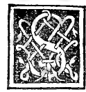
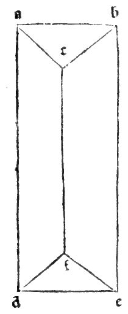

CAPITOLO LVIII¶
De li corpi oblunghi cioè più longhi ouer alti che larghi.

Sequita excelso Duca apiena notitia di questo nostro tractato douerse alcuna cosa dire alor notitia deli corpi oblonghi cioè de quelli che sonno più longhi ouero alti che larghi. Si commo sonno colonne e lor pyramidi. Dele quali più sorte delune elaltre se trouano. E pero prima diremo dele colonne e suoi origine, poscia dele loro pyramidi. Le colonne sonno de doi facte cioè rotonde e laterate. si commo le figure piane altre sonno curuilinee. e sonno quelle che da linee curue ouer torte sonno contenute. E altre sonno dette rectilinee. e sonno quelle che da linee recte sonno contente.
La colonna rotonda e vn corpo contenuto fra doi basi circulari equali e sonno fra loro equidistanti la quale dal nostro philosopho nel vndecimo cosi fia diffinita cioè la figura rotonda corporea, delaqual le basi sonno doi cerchi piani in la extremita e crassitudine cioè altezza equali fia el uestigio del parallelogrammo rectangolo fermato el lato che contene langol recto. Eia dieta superficie circunducta fin tanto che la torni al luogo suo. E chiamase questa figura colonna rotonda. Onde dela colonna rotonda e de la spera edel cerchio fia vn medesimo centro. Verbi gratia. Sia el parallelogrammo abcd, cioè superficie quadrangola de lati equidistanti ede angoli recti.
E fermise el lato ab. el quale cosi fermato tutto el paralelogrammo se meni atorno fin tanto che retorni al suo luogo onde comenzo amouerse la figura adonca corporea dal moto de questo paralelogrammo descripta se chiama colonna rotonda, dela quale le basi sonno doi cerchi elo centro fia el ponto b. e laltro e quella che fa la linea da. nel suo moto ouer girare, e lo suo centro fia el ponto a. e laxe de questa colonna e dieta la linea ab. laqual sta ferma nel mouiraento del paralelogrammo.
E se noi ymaginaremmo el paralelogrammo abcd. quando el prouenza col suo girare al sito abef. cosi congionga al sito donde comenzo a raouerse secondo la continuatione de la superficie piana: cioè che tutto sia vn paralelogramo. dcef. e che habiamo menato in epso el dyametro. de. el quäl dyametro ancora de. sira dyametro dela colonna. Quello che si dici dela colonna e dela spera e del cerchio essere vn medesimo centro: se deue intendere quando de questi sia vno medesimo diametro: verbi gratia: hauemo dicto che de. fia dyametro de questa colonna.
Adonca la spera e lo cerchio deli quali el dyametro e la linea de. fia necessario che habino vn medesimo centro con lo centro dela proposta colonna. Sia adonca che la linea de. diuida la linea ab. nel ponto g. e sira g. centro dela colonna. Pero chel diuide laxe dela colonna per equali e ancora el diametro dela colonna per equali che se proua per la 26. del primo, per che li angoli che sonno al g. sonno equali per la i5. del primo. Eli angoli che sonno al a. e al b. sonno recti perla ypothesi. Eia linea ad. fia ancora equale ala linea bc. Ondedg. fia equale al eg. E cosi ag equali al gb.
E conciosia che li angoli e. e f. sonno recti se sopra al ponto g. secondo el spacio dge. ancora sopra la linea de. se facia vn cerchio epso passara per la conuersa dela prima parte dela trigesima del terzo per li ponti e. e f. Onde el ponto g. fia centro del cerchio del quale el dyametro e dyametro dela colonna. E pero ancora e dela spera. E per questo se manifesto’ che a ogni paralelogrammo rectangolo el cerchio: e a ogni colonna la spera se pò circumscriuere.
E cosi fia chiaro quello che ha voluto proponere a noi questo theorema del nostro philosopho in dieta diffinitione dela colonna rotonda Dela quale fin qua sia sufficiente e sequendo diremo dele laterate commo fo promesso.
Marginal Woodcut Diagrams (Paganini 1509)¶

Folio 0052 Diagram 1¶